MLMIIN 2026 – Student Setup Guide
In this course you will run Python code inside a Docker container, and connect to it from Visual Studio Code (VS Code) using the Jupyter extension. We will also install some additional tools on your host machine (outside the container) to work with git repositories, support PDF export and Quarto documents. This guide walks you through the steps to set up your environment. In case of doubt, ask the instructor before proceeding!
Make sure you read these notes at least once before starting the setup process. We will be going over this setup instructions in the course first session. So the goal of reading this document now is to familiarize yourself with the steps involved. If you are certain that you can proceed on your own, you can start the setup right away. But if you have any questions or concerns, please wait until the first session where we will go through the setup together and help you with any issues.
0. Prerequisites
0.1. Hardware / OS
- A laptop with at least:
- 8 GB RAM (16 GB recommended); if you have less than 8 GB, let us know.
- 10–15 GB free disk space
- Operating system:
- MacOS (Apple Silicon is assumed; if you have an Intel Mac, let us know)
- Windows 11 (64-bit)
- If you use Linux, let us know.
0.2. Create a course folder
Decide on a folder where you will keep everything related to this course, for example:
- On macOS:
/Users/<yourname>/MIIN/ML - On Windows:
C:\Users\<yourname>\MIIN\ML
In these examples the MIIN folder refers to a folder where you keep all your MIIN-related files, and the ML folder is specifically for this course. The MIIN folder may be located deeper in your user folder. We’ll call this folder ML your course root.
1. Install Docker
Open a browser and go to www.docker.com/products/docker-desktop. Click on Download Docker Desktop and select the right download for your OS, as illustrated below:
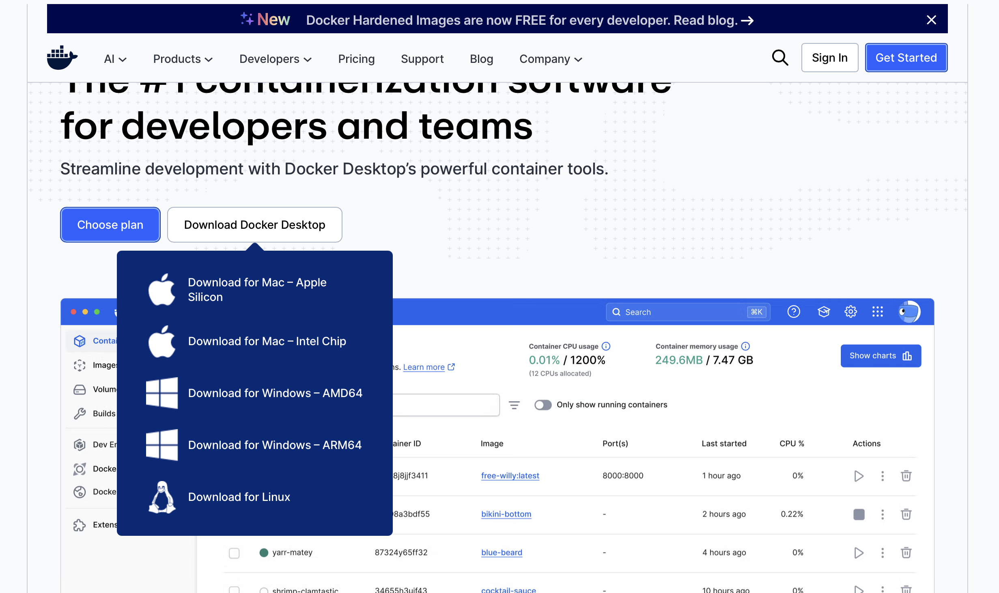
1.1. Docker Desktop Setup for MacOS
Open the downloaded
.dmgfile. Drag Docker.app into the Applications folder.Start Docker by hitting Command + Spacebar, typing Docker, and pressing Enter.
You may need to accept security dialogs and sign in (create a free Docker account if you don’t already have one).
Wait until the Docker whale icon in the menu bar stops animating and shows “Docker Desktop is running”.
To verify Docker works, open Terminal and run:
docker --versionYou should see a reply like
Docker version 27.5.1, build 9f9e405
1.2. Docker Desktop Setup for Windows
Important: On Windows, Docker Desktop requires WSL2 and virtualization enabled.
1.2.1. Enable WSL2 and Virtualization (one-time)
Press Start, type
powershell, right-click Windows PowerShell, choose Run as administrator.In the terminal that opens run:
wsl --installReboot when prompted. After the reboot verify WSL is installed by opening a Powershell terminal again and running:
wsl -l -v
You should see at least one distro (e.g. Ubuntu).
Also make sure virtualization is enabled in your BIOS/UEFI (usually it already is; if not, look for “Intel VT-x” or “AMD-V”).
1.2.2. Install Docker Desktop
- Go to:
https://www.docker.com/products/docker-desktop/ - Download Docker Desktop for Windows.
- Run the installer:
- During setup, leave “Use WSL 2 backend” checked.
- After installation, start Docker Desktop from the Start menu.
- Wait for it to say “Docker Desktop is running”.
Verify Docker works. In PowerShell:
docker --versionYou should see a reply like
Docker version 27.5.1, build 9f9e4052. Install Visual Studio Code and Extensions
2.1. Install VS Code
- Go to: https://code.visualstudio.com/
- Download and install VS Code for your OS (macOS or Windows).
- Start VS Code.
You should see something like this:
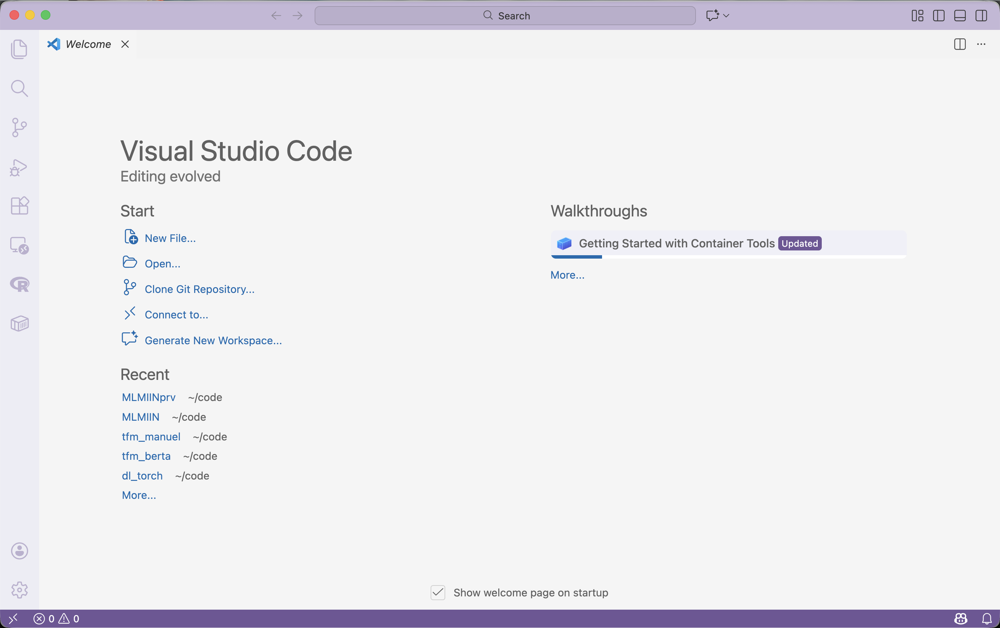
2.2. Install required extensions
Install the following extensions from the VS Code Marketplace. With VS Code open, you may simply open each link below to open the extension page, then click Install.
- Python
- Jupyter
- Container Tools
- Quarto (optional, for Quarto support)
Make sure the extensions are enabled (no “Enable” button visible).
3. Install git and GitHub Desktop.
If you already have git installed, you can skip this step. If you are unsure, open a terminal (macOS) or PowerShell (Windows) and run:
git --versionIf you see a version number (e.g. git version 2.34.1), you have git installed. If you see an error, follow the instructions below.
Besides, if you have not used Git and GitHub before, you may consider installing GitHub Desktop (see below for instructions). It provides a graphical interface to manage git repositories and is easier to use for beginners. Alternatively, many people prefer using the VS Code Git integration, that we will also describe below. These tools are compatible, so you can use both if you wish. If you prefer to use git from the command line, we assume that you will handle authentication with GitHub using SSH keys or personal access tokens as needed.
3.1 Install git on MacOS
3.1.1. Install Homebrew (if not already installed)
If you are a Mac user, Homebrew is a popular package manager that makes it easy to install software like git and many other useful tools. The homepage is https://brew.sh.
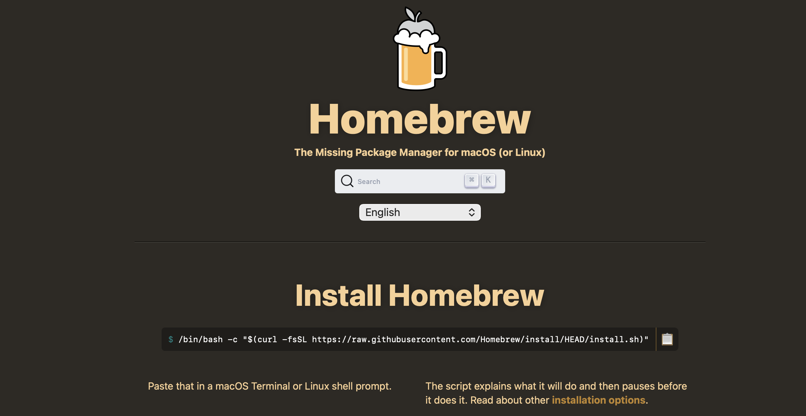
As shown in the picture above you can install it by opening Terminal and running the following command:
/bin/bash -c "$(curl -fsSL https://raw.githubusercontent.com/Homebrew/install/HEAD/install.sh)"When the Homebrew setup ends check it by running:
brew --version3.1.2. Install git using Homebrew
Now you can install git by running:
brew install gitThat’s it! You can verify the installation by running:
git --version3.2 Install git on Windows
To install git on Windows go to https://git-scm.com/install/windows and download the installer (Git for Windows/x64 Setup).
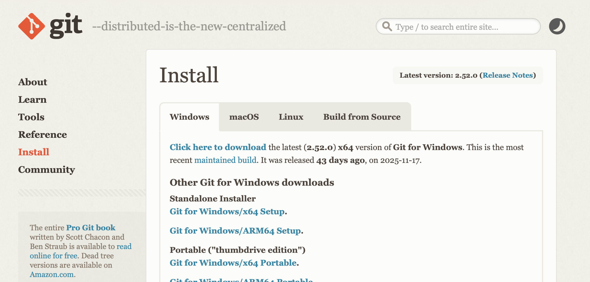
Run the installer and follow the instructions. You can leave all options at their default values.
After installation, open PowerShell and verify the installation by running:
git --version3.3 Create a GitHub account
If you haven’t already, we require that you create a free GitHub account, linked to your university email. You can do this by going to https://github.com/signup and following the instructions. You do not need to provide payment information for the free account!
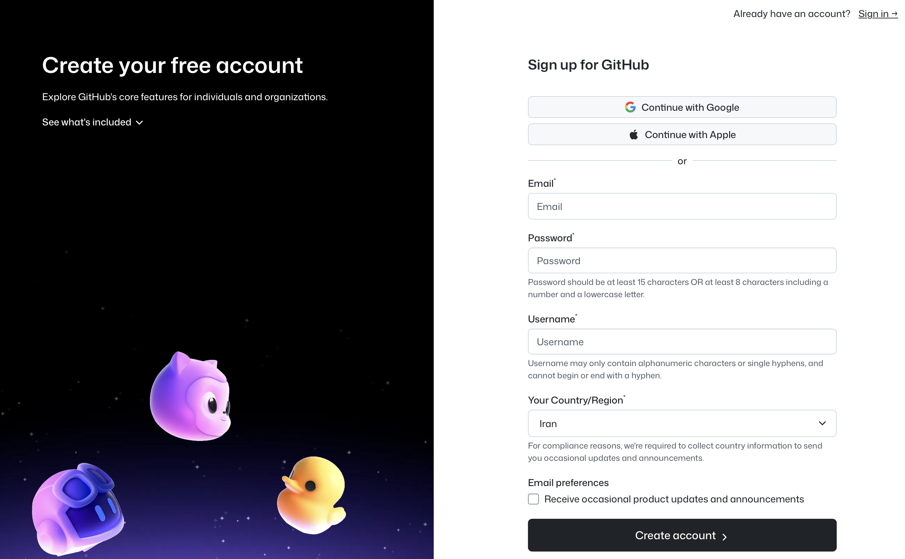
3.4. Install GitHub Desktop (optional)
If you prefer a graphical interface to manage git repositories, you can install GitHub Desktop. Go to https://desktop.github.com/download/ and download the version for your OS. Run the installer and follow the instructions.
Optional but strongly recommended: after creating your GitHub account, apply for a student developer pack at https://education.github.com/pack. It gives you access to many free tools and services for students, including among others Copilot, GitHub Codespaces, and more.
3.4.1 Configure GitHub Desktop
After installing GitHub Desktop, open it and sign in with your GitHub account (use Settings). You can then clone repositories, create new ones, and manage your git projects using the graphical interface.
3.5. Using git in VS Code
VS Code has built-in support for git that is very convenient if you already have some experience with git. You can access it by clicking on the Source Control icon in the left sidebar (it looks like a branch with a dot). From there, you can clone repositories, commit changes, push to remote repositories, and more.
The first time you use git in VS Code, it may ask you to login to your GitHub account. Follow the instructions to authenticate.
3.6. The .gitignore file and excluded folders
Your fork of the course repository includes a .gitignore file that excludes certain folders and files from being tracked by git. This is important to avoid committing large files (such as large datasets) or temporary files that are not relevant to the course.
In particular, the .gitignore file excludes: + A folder called data that we will use to store datasets. + A folder called exclude that you can use to store any files you do not want git to track. For example, you can use a text file in that folder to store sensitive information such as API keys, passwords, etc. that you do not want to commit to your repository.
The files in these folders are still available to your notebooks when you run the Docker container, but they will not be committed to your git repository. This helps keep your repository clean and avoids unnecessary large files.
Of course any file in your course root folder but outside your forked repository folder (e.g. MLMIINfrk) will also be ignored by git.
Go ahead and create these folders now inside your forked repository folder (e.g. MLMIINfrk). Open a terminal (macOS) or PowerShell (Windows), navigate to your forked repository folder, and run:
mkdir data excludeNow run
git statusand verify that these folders do not appear in the list of untracked files. If you have followed these instructions up to this point, git should answer
On branch main
nothing to commit, working tree clean4. Get the Course Files
4.1 Fork the course repository
Login to GitHub on your web browser. Go to https://github.com/ML-MIC/MLMIIN and click on the fork icon (top-right) to create your own copy of the repository.
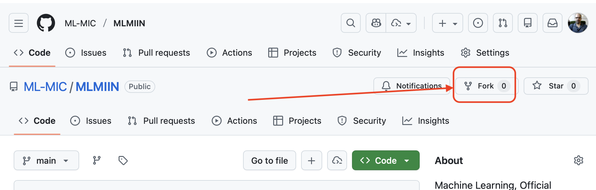
We strongly suggest using MLMIINfrk as the name of your fork, so that it is easy to identify. Wait until the fork is completed and the web page for the forked repository is shown.
4.2 Clone your fork to your computer
This step depends on the tool you are using: GitHub Desktop, VS Code, or git command line. In either case you will start by clicking the green Code button on your forked repository page, and copying the URL shown (make sure HTTPS is selected) as in the picture below:
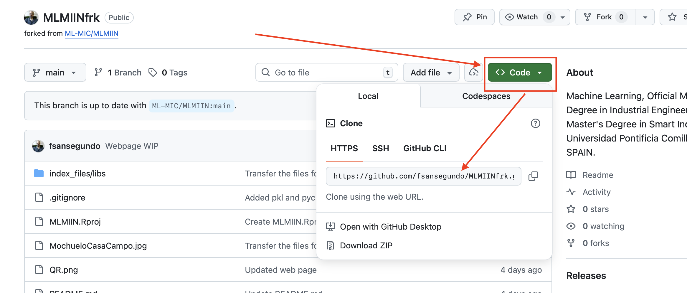
4.2.1 Using GitHub Desktop
Open GitHub Desktop and go to File → Clone Repository…. See the figure for the window that opens:
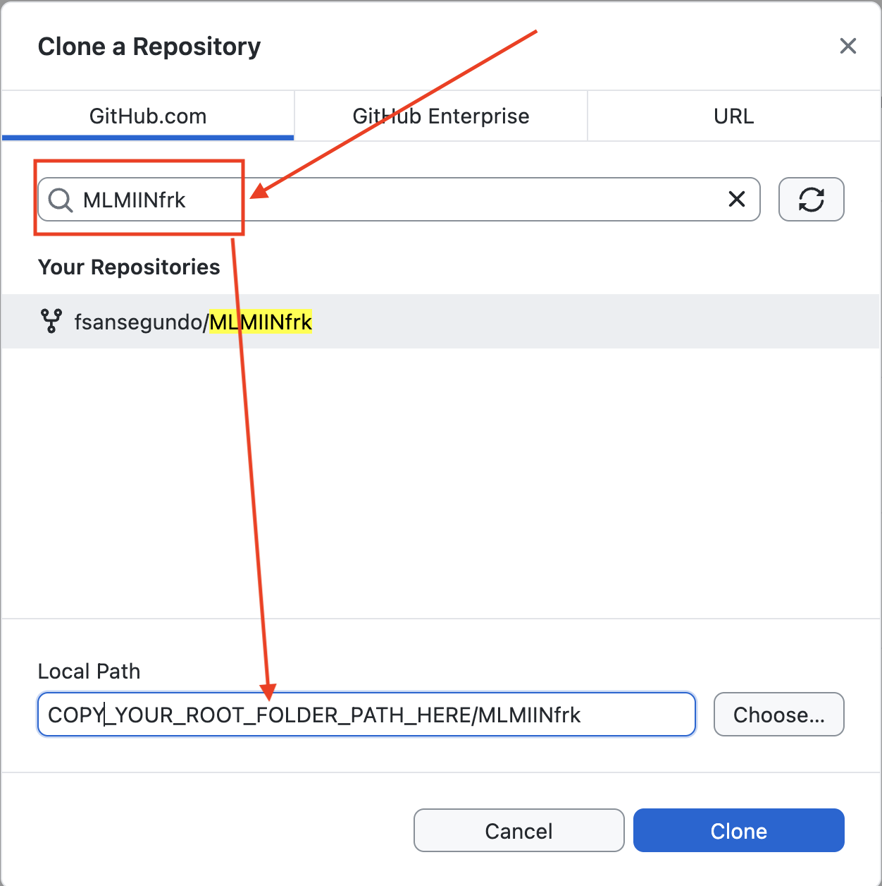
Make sure GitHub is selected and enter the name of the fork you created before (that is MLMIINfrk if you followed our advice). Choose your course root as local path where to clone the repository (this will be your folder). Finally click on Clone.
In the next step make sure that you select To contribute to the parent project as illustrated below:
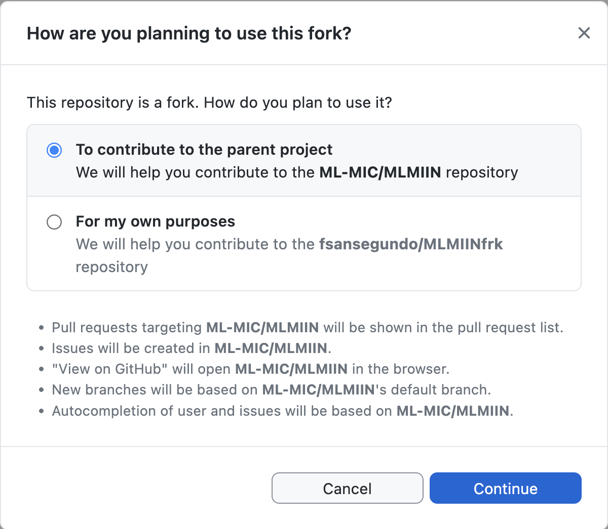
4.2.2 Using VS Code
Open VS Code. Press Ctrl+Shift+P (Windows) or Cmd+Shift+P (macOS) to open the command palette. Type Git: Clone and select it.
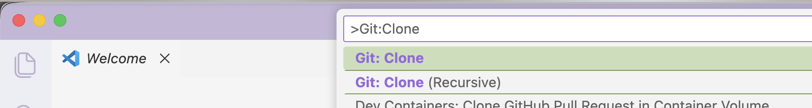
Next, paste the URL of the forked repo you copied before and press Enter.
Make sure that you use the forked repo and not the original one! The URL should contain your GitHub username.
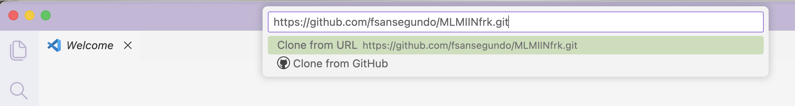
When prompted, choose your course root as the local repository destination (the repository will be clones as a subfolder of your course root folder). Wait until the cloning is completed. You can then open the folder in VS Code (and answer Yes about trusting the authors).
5. Build the Course Docker Image
Depending on your OS and hardware architecture, this can be a long process (expect up to 20–40 minutes). But you only need to build the image once (unless the course Dockerfile changes).
5.1. MacOS
- Open Terminal.
- Use
cdto navigate to the subfolder in your forked repository folder that contains the Dockerfile for the image; a typical example is:
cd ~/MIIN/ML/MLMIINfrk/00_SetupHere ~ stands for your home folder, and so ~/MIIN/ML is the course root folder.
- Build the image by running:
docker image build --file Dockerfile_mac --tag mlmiin:latest .This can take a while the first time (it creates the conda environment and installs all required libraries). When it finishes, you can confirm the image exists:
docker imagesYou should see something like mlmiin latest in the list.
5.2. Windows
- Open PowerShell.
- Use
cdto navigate to the subfolder in your forked repository folder that contains the Dockerfile for the image; a typical example is:
cd C:\Users\<yourname>\MIIN\ML\MLMIINfrk\00_Setup- Build the image:
docker image build --file Dockerfile_x86 --tag mlmiin:latest .Check it with:
docker imagesYou should see mlmiin listed.
6. Run the Docker Container
You should always run the container from your course root folder. This ensures that Docker can see all the subfolders we will need to access. The dockerfile and the run command are designed to mount the course root folder into the container at a folder called /wd (work directory).
Additionally, this keeps the container isolated from other folders on your computer, which is a good security practice.
6.1. Command to run the container
In Terminal for MacOS o or PowerShell for Windows, and from your course root folder, run the following command to start the container and the Jupyter kernel inside it.
docker run -it --rm -p 8888:8888 -v "$PWD":/wd mlmiin:latestIn the terminal, you should see Jupyter starting and eventually a line like:
http://127.0.0.1:8888/labIn our course image, Jupyter is configured without a token (password), so the URL we need is simply
http://localhost:8888Keep this terminal open while you work. If you close it, the container (and Jupyter) will stop and you may lose unsaved work.
7. Connect from VS Code to the Jupyter Kernel in Docker
7.1. Open the course folder in VS Code
If you have followed the steps above, you may have already opened the course folder in VS Code (you can check it by looking at the top of the VS Code window; it should show the folder name, such as MLMIINfrk). In that case skip to the next section.
If not, do the following:
- Start VS Code.
- Go to File → Open Folder…
- Select your course root folder.
- VS Code might ask if you trust the folder → click Yes, I trust the authors.
7.2. Open a notebook
In the VS Code Explorer panel (the first icon on the left side bar). Navigate to 00_Setup and open the 1_1_Introduction.ipynb notebook file (click it). The file may look different in your computer, because of the extensions you have installed, but it should be similar to this:

Before doing anything else, make sure you make a copy of the notebook to avoid modifying the original file. You can do this by right-clicking on the file in the Explorer panel and selecting Copy, then right-clicking again and selecting Paste. Rename the copied file to something like 1_1_Introduction_local.ipynb.
7.3. Select the Jupyter server
At the top-right corner of the notebook editor panel, you should see a Select Kernel button:

Click on it, and then click on Existing Jupyter server:

In the text fiel that appears enter http://localhost:8888 and press Enter:

Click on Yes to connect to the server. It is safe to ignore the warning about untrusted server, as we are the ones running it locally. In the next dialog, accept localhost as the name of the server by clicking Enter.
Finally click on the Python 3 (ipykernel) option to select the kernel.

Now you are ready to start executing Python cells in the notebook. Search for the section with title Python Setup Checks in the notebook and run the cells there to verify that everything is working correctly. Let your instructor know if you encounter any issues.
8. Typical Workflow for Each Session
For every course session, you will usually repeat these steps. Your instructirs will remind you to do so at the start of the first few sessions, but eventually it will be your responsibility to remember to do this.
8.1 Preliminaries: get the Jupyter server running with Docker
- Start Docker Desktop (Windows/macOS) → wait until it’s running.
- Open a terminal (macOS) or PowerShell (Windows).
- Go to your course root folder, e.g.:
macOS:
cd ~/ML/MIINWindows (PowerShell):
cd C:\Users\<yourname>\ML\MIIN
- Start the container:
bash docker run -it --rm -p 8888:8888 -v "$PWD":/wd mlmiin:latest - Open VS Code, open the MIIN folder (it contains your fork MIINfrk as a subfolder).
8.2 Update course files
Make a git pull from the upstream repository to get the latest course files. Instructions follow.
In your case the upstream repository is the original course repository at
https://github.com/ML-MIC/MLMIIN.git
When we update the course files (e.g. new notebooks, fixes, etc.) we will push them to that repository, and you will need to pull them into your fork before starting the session. The way to do that depends on how you plan to manage git:
8.2.1. Using GitHub Desktop
In GitHub Desktop, make sure that your fork is selected as Current Repository.
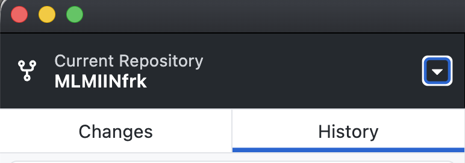
Then click on Repository → Open in Terminal and wait for the terminal window to open. When it does, type
git pull upstream mainAnd wait for the operation to complete.
- If you have made changes in files that have also been modified in the upstream repository, you may see merge conflicts. In that case, contact your instructor for help. Also see below some tips to minimize the chances of conflicts.
- If you get an error about the
upstreamremote not existing, it means you have not yet added it. In that case, you can ask your instructor for help. But essentially, you need to open a terminal window and run:
git remote add upstream https://github.com/ML-MIC/MLMIIN.git8.2.2. Using VS Code
8.2.2.1 Add the upstream remote (one-time)
First you will need to add the upstream remote. But you only need to do this once! Start by clicking on the Source Control icon in the left sidebar. It looks like this
Then click on the three dots next to Changes and select Remote → Add Remote… as illustrated below:
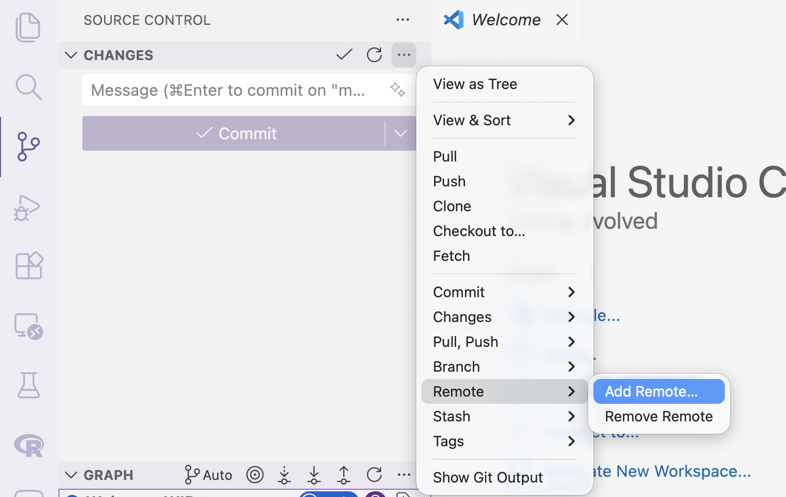
You will see a text field at the top like this one:
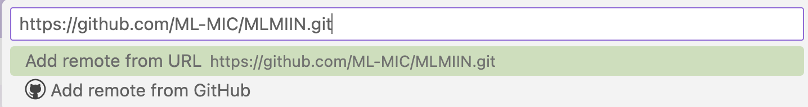
Enter the URL for the upstream repository, which is
https://github.com/ML-MIC/MLMIIN.git
and press Enter. When prompted for the remote name, enter upstream and press Enter again.
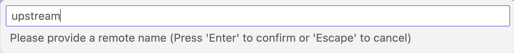
8.2.2.2 Pull from upstream (every session)
At the beginning of each session you will need to pull the latest changes from upstream. To do so, click on Terminal → New Terminal to open a terminal window in VS Code.
When the terminal opens in the bottom panel, make sure that you are located in the MLMIINfrk folder (it should appear in the prompt). Then type the following command and hot Enter.
git pull upstream mainWait for the operation to complete.
If you have made changes in files that have also been modified in the upstream repository, you may see merge conflicts. In that case, contact your instructor for help. Also see below some tips to minimize the chances of conflicts.
8.3. Some tips about merge conflicts
We said it before, but this is really the best way to avoid merge conflicts: make a copy of the course notebooks to avoid modifying the original files.
9. Install LaTeX for PDF Export
9.1. MacOS
We will use LaTeX to export notebooks to PDF. You need to install it on your host machine (outside the Docker container).
Install LaTeX from https://www.tug.org/mactex/. We recommend installing BasicTeX (smaller download) unless you plan to use LaTeX heavily outside this course. See the figure of the MacTex website below for reference
<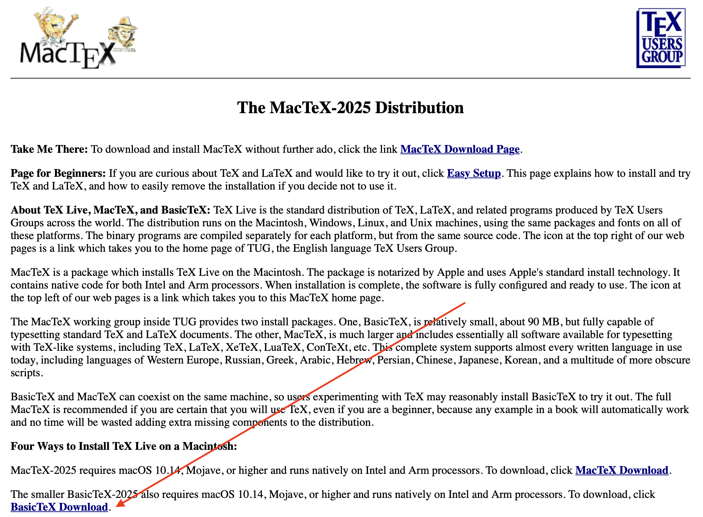
If you are comfortable with the command line, you can also install it using Homebrew:
brew install --cask basictex9.2. Windows
Install MiKTeX from https://miktex.org/download. See the figure of the MikTex website below for reference
<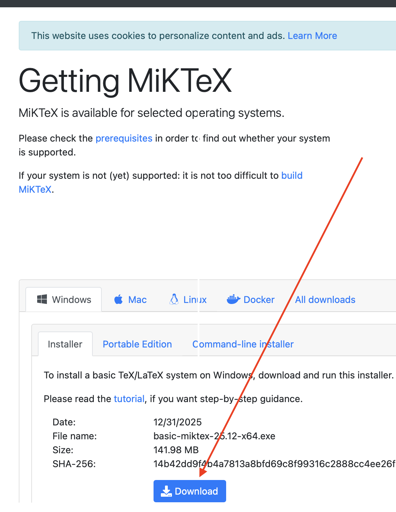
10. Install Quarto & Quarto Extension for VS Code
10.1. About Quarto and setup
Quarto is a scientific and technical publishing system built on Pandoc. It is used to create documents, presentations, websites, and more, using plain text files with simple formatting syntax. And it offers an (arguably superior) alternative to Jupyter notebooks for creating documents that combine code, text, and visualizations:
- Being plain-text based, it works well with git version control systems (opposite to Jupyter notebooks, which are JSON files that do not work well with git, to say the least).
- Quarto documents can be very easily converted to multiple output formats (HTML, PDF, Word, etc.) from the same source file. Jupyter notebooks are more limited in this regard.
- Quarto documents can combine different programming languages (Python, R, Julia, C++, etc.) in the same document, while Jupyter notebooks are limited to a single kernel/language per notebook.
Despite this praise of Quarto documents, we acknowledge that Jupyter notebooks are very popular in the data science and machine learning community, and they have become the current de facto standard for interactive coding. Therefore, we will focus on Jupyter notebooks in this course. However, if you are interested in learning about Quarto, let us know, and we can provide additional resources and guidance.
You can install Quarto from https://quarto.org/docs/get-started/.
10.2. Quarto extension for VS Code
We will also use Quarto to improve the display of the notebooks for the course. In order to do that you should install the Quarto extension for VS Code, using the link below:
The setup for this extension is similar to those described in section 2.2 above.
10.3. Using Quarto to render notebooks
Once you have installed Quarto and the Quarto extension for VS Code, you can use it to render Jupyter notebooks to various formats (HTML, PDF, etc.). To do this, open a Jupyter notebook in VS Code, then click on the Quarto Render button in the top-right corner of the notebook editor panel. Select the desired output format and follow the prompts to render the notebook.
Alternatively, you can render notebooks from the command line using Quarto. Open a terminal in VS Code, (click on Terminal → New Terminal) navigate to the folder containing the notebook, and run:
quarto render your_notebook.ipynb --to htmlChange html to pdf or other formats as desired. The rendered file will be saved in the same folder as the original notebook. If you run into any issues, please let your instructor know.